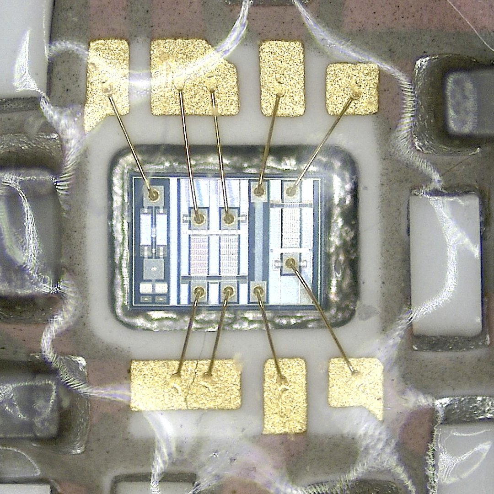

A bit of context
More context
Wik'history
- 1958 - First IC (Jack Kilby, Texas Instruments) 🤖
- 1973 - SPICE is born! (Laurence Nagel, California) 🔥
- 1981 - EDA becomes an industry ğŸ
- 1984 - First FPGA is born! (Altera) ♻️
- 1994 - First generation of HLS (Synopsys) 🪄
- 2018 - Open-source RTL2GDSII flow (OpenROAD) 🚀
Ready to install 50 years of history in 10 minutes?
More Wik'history
Available PDKs are 180nm (GlobalFoundries), 130nm (SkyWater) and 90nm (SkyWater, FDSOI).
First used in the industry between 1999 and 2003. Old but cheap.
Keep in mind that performance can be traded off!
Hello Sky130!
Semicustom workflow

Fullcustom workflow